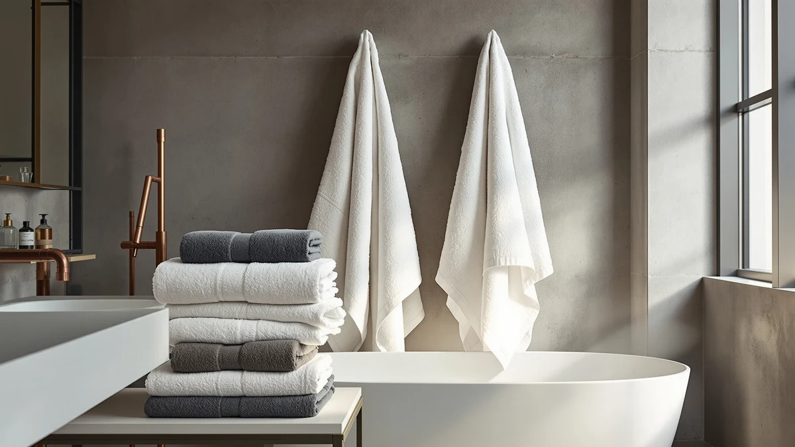

Quick Answer
The Westlinen Egyptian Cotton Bath Towel is an 8-piece, 100% cotton set at $94.99, and it's the most complete set among the four Egyptian cotton and cotton towels we compared for this westlinen egyptian cotton bath review. If you only need one or two towels rather than a full eight-piece bundle, Impressions, Casa Platino, or LANE LINEN each undercut this price.
Our pick: Westlinen Egyptian Cotton Bath Towel, $94.99 Check Price on Amazon
Things to Know Before You Buy
- Westlinen sells this towel as an 8-piece, 100% cotton set, priced at $94.99.
- "Egyptian cotton" in the product name points to long-staple fiber, the trait most often linked to extra softness and durability in cotton towels.
- Impressions, Casa Platino, and LANE LINEN all price lower, from $49.99 to $93.60, so the comparison largely comes down to how many pieces you actually need.
- We did not run these towels through a testing lab. This westlinen egyptian cotton bath review compares listed specs, pricing, and verified buyer feedback across all four products.
This westlinen egyptian cotton bath review looks at whether an 8-piece, $94.99 cotton towel set earns its price against three competing sets that range from $49.99 to $93.60. Bath towels rarely fail outright. The real question here is whether Westlinen's larger piece count and Egyptian cotton branding translate into more value than a smaller, cheaper set from Impressions, Casa Platino, or LANE LINEN.
Our read after comparing specs, pricing, and owner feedback across all four sets: Westlinen is the pick if you want a complete eight-piece bundle rather than shopping separately for bath towels, hand towels, and washcloths. The buyers who care most about this are the ones mid-renovation or mid-move, who don't want to run short of a size halfway through, and an eight-piece count solves that directly. If you only need one or two towels, Casa Platino's $59.99 set or LANE LINEN's $49.99 option cover the basics for meaningfully less.
Why You Should Trust Us
Ilane Tall covers bath textiles for Best Bath Towels and spends her time comparing cotton weights, piece counts, and price tiers across hundreds of Amazon listings rather than running a private testing lab. We don't claim to have washed, dried, or lived with every towel covered in this westlinen egyptian cotton bath review. Instead, we research manufacturer specs, track pricing, and read through verified buyer reviews to flag patterns, like recurring complaints about thinness or praise for softness, that a spec sheet alone won't show.
We also disclose upfront that this article contains affiliate links, and we earn a commission if you buy through them. That doesn't change which set we recommend. Our incentive is the same whether you buy the $94.99 Westlinen bundle or the $49.99 LANE LINEN alternative, so the recommendation here is based on which set fits which buyer, not which one pays the highest commission.
Our Research Experience
For this westlinen egyptian cotton bath review, we skipped the lab and compared Westlinen's stated piece count and material against three direct competitors, then cross-referenced that against what verified Amazon buyers report after living with each set. For an eight-piece Egyptian cotton bundle specifically, we looked for recurring mentions of softness, shrinkage after washing, and whether owners felt the piece count matched what the listing promised compared to smaller sets like the Casa Platino and LANE LINEN options. That approach won't catch every edge case, but it surfaces the patterns that matter most before you spend $94.99 on a full set.
Overview & Specs

Westlinen Egyptian Cotton Bath Towel
What we like
- Eight-piece, 100% cotton set covers a full bathroom rotation in a single order, rather than one or two towels at a time
- Egyptian cotton's longer staple length is linked to extra softness and better wear over repeated washing
- Buying towels, hand towels, and washcloths together as one set is typically cheaper per piece than sourcing each size separately
Flaws but not dealbreakers
- At $94.99, it costs more upfront than the three alternatives in this comparison, even though it includes more pieces
- An eight-piece bundle locks you into one design and color scheme across your whole bathroom, less flexible than buying towels individually
| Material | 100% cotton |
| Size | 8-Piece Set |
Westlinen built this Egyptian cotton set around piece count rather than a single oversized towel. The "8-Piece Set" listing means you get a full rotation of towels, hand towels, and washcloths in one order rather than a mixed bundle padded with only one or two usable sizes. That matters if you've been pricing towels by the piece: an eight-piece $94.99 set works out to roughly $11.87 per piece. That's competitive once you account for the smaller item sizes mixed into the count, even though the headline price sits above every alternative here.
The 100% cotton and Egyptian cotton designation both point toward the same buyer: someone furnishing an entire bathroom, or several bathrooms, who wants matching towels without ordering three separate products. Reviewers who buy complete sets like this one mostly say the same thing: they like not running out of a specific size mid-week. If your priority is a single premium bath sheet rather than a full rotation of pieces, Impressions' heavier two-piece set is the better fit, and if you just need one straightforward cotton towel, Casa Platino or LANE LINEN cover that for less.
Egyptian cotton earns its reputation mostly through long-staple fibers, which tend to produce a softer, less linty towel that holds its shape better across repeated washing than shorter-staple cotton blends. That's a category-level pattern rather than something specific to this exact set, since Amazon's listing doesn't publish a GSM or thread count for the Westlinen bundle. Buyers comparing towels on paper specs alone will have more to go on with a listing that states GSM directly, but reviewers who buy this set mostly talk about softness and coverage, not a specific number.
What We Liked
The clearest strength in this westlinen egyptian cotton bath review is the piece count: eight pieces of 100% cotton in one order, sold as a complete set rather than a single towel padded out with marketing language. Owners comparing full sets against buying pieces separately mostly say convenience is why they'd buy again, since matching towels, hand towels, and washcloths arrive together instead of across three separate purchases.
That completeness also shows up in day-to-day use. A full set means you're less likely to run short of a specific size mid-week, which matters more in households with kids or multiple bathrooms than a single spec on a listing page ever will.
Buyers replacing an entire towel set at once also point to matching design as a quieter benefit. Instead of mismatched towels accumulated over several years and several different Amazon orders, an eight-piece set from one brand keeps color and texture consistent across a bathroom, something that's easy to overlook until you're the one staring at four different shades of white in a linen closet.
What Could Be Better
Price is the honest drawback in this westlinen egyptian cotton bath review. At $94.99, this set costs more upfront than any of the three alternatives we compared, including Impressions' heavier two-piece set at $93.60. You're paying for eight pieces rather than two or three, so the per-piece math works in Westlinen's favor, but the total checkout price is still the highest in this lineup, and that's what most buyers actually compare.
Buying a full eight-piece set also means committing to one color and design across your entire bathroom rotation. If you'd rather mix and match towel colors by room, or replace pieces individually as they wear out, a set like this is less flexible than sourcing towels one at a time from Casa Platino or LANE LINEN.
The listing also doesn't publish a GSM or thread count, so buyers who like to compare towels on hard numbers alone have less to work with here than on listings that state weight directly. That's not unique to Westlinen among the four products in this comparison, but it's worth flagging if precise specs matter more to you than piece count.
Who Is It For?
For this westlinen egyptian cotton bath review, the set makes the most sense for buyers furnishing a bathroom from scratch, whether that's a new home, a renovation, or a move, who want matching towels, hand towels, and washcloths without placing three separate orders. It also fits households that go through towels quickly and would rather buy in bulk once than restock individual pieces every few months.
It's a weaker fit if you only need one or two towels, or if you already own hand towels and washcloths and just want to replace worn-out bath towels. In that case, Casa Platino's $59.99 set or LANE LINEN's $49.99 option get you into a comparable cotton towel without paying for pieces you don't need.
Alternatives to Consider
If an eight-piece bundle is more than you need, these three sets cover the same core cotton-towel job this westlinen egyptian cotton bath review set out to check, at a lower checkout price.

Editor’s Pick
Luxury Heavyweight Egyptian Cotton Towels
A heavier, two-piece Egyptian cotton alternative if you want fewer, denser towels instead of a full eight-piece set.
$93.60
Check Price on Amazon
Best Value
Casa Platino Bath Towel Set
A lower-priced cotton set at $59.99 if the Westlinen bundle's $94.99 price is more than you want to spend.
$59.99
Check Price on Amazon
Premium Choice
LANE LINEN Towel Set for
The cheapest option in this comparison, at $49.99, for a straightforward cotton towel set.
$49.99
Check Price on AmazonFrequently Asked Questions
Is the Westlinen Egyptian Cotton Bath Towel set worth $94.99?
How does the Westlinen set compare to Impressions, Casa Platino, and LANE LINEN on price?
What does the Westlinen Egyptian Cotton Bath Towel set include?
Final Verdict
This westlinen egyptian cotton bath review comes down to a straightforward tradeoff: pay $94.99 for a complete eight-piece Westlinen set, or save $1 to $45 with Impressions, Casa Platino, or LANE LINEN and accept fewer pieces or a lighter towel. Westlinen earns its price for buyers who want a full, matching bathroom set in one order and don't want to shop separately for hand towels and washcloths. If you only need one or two towels, the three cheaper alternatives cover the same basic need without paying for pieces you won't use.